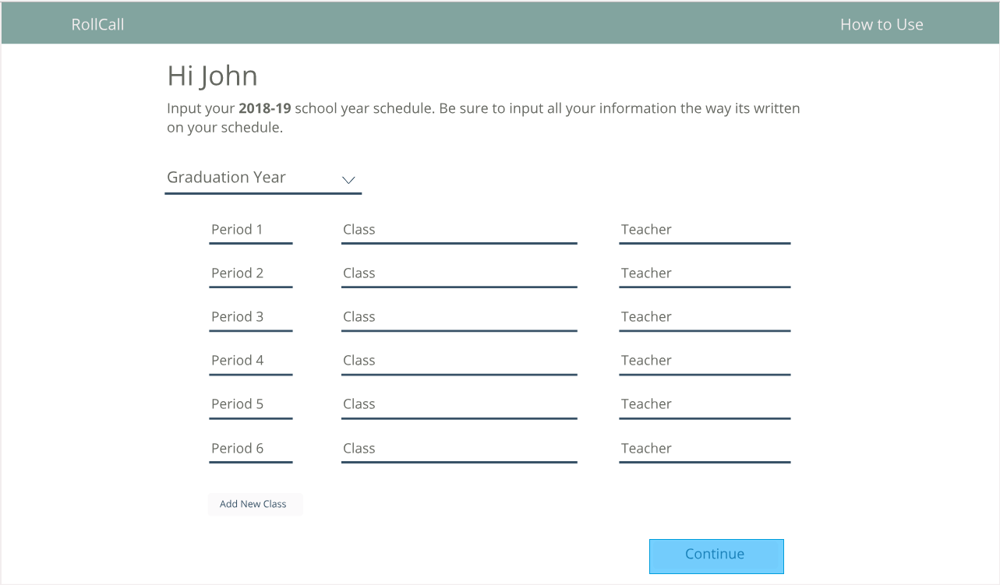
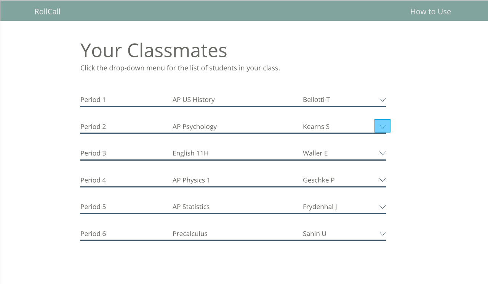

First, make sure you sign in/sign up.
This allows us to keep track of your information and allows you to come back and edit your schedule if necessary.
[space holder for front sign in page]
On the input page, you enter your schedule and teachers according to the period.
It is important that you enter those exactly as you see it on your schedule.
[ ie. English 11 H & Waller ,E ]
Then, click submit to input your classes and teachers.
From there, your information is run through our database and compared to other student's data.

After you've inputed your schedule, your account is updated with your new schedule.
You will see your schedule appear.

When you click on the down arrow, a list of your classmates will appear with their graduating year.
The classmates you see depend on the number of people who have contributted to the database.
Meaning, we only show the data that we have and if no one has inputed that as their course with that teacher, no one will show up as a classmate.